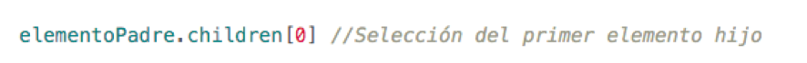

codificar

Una de las principales funciones que cumple JavaScript en un proyecto web, es hacer que cada página sea dinámica e interactiva para que el usuario, durante la navegación, se sienta ilustrado de cómo realizar las acciones correspondientes. Todas estas características se alcanzan mediante las herramientas que tiene el lenguaje para la modificación de estilos, las cuales establece una relación entre el usuario y el contenido, de tal manera que la información mostrada se transmite adecuadamente.
El objeto style permite realizar modificaciones en cualquiera de las propiedades CSS. Para usarla se debe realizar la selección de un elemento y luego invocar el objeto style. Posteriormente se accede a la propiedad de estilo a modificar.
Iniciaremos la construcción de una plataforma para enseñar cursos mediante e-learning. En este primer ejercicio debes crear un conjunto de funciones que permitan realizar algunos cambios en los estilos de los elementos de la página. Debes guardar varias versiones de este ejercicio, ya que continuaremos desarrollando esta plataforma en los ejercicios de las siguientes lecciones.
Contenido
Instrucciones
- Descarga el codBase.zip que contiene todo el diseño y estructura de la página.
- En el archivo index.js debes crear las funciones que se mencionan en los siguientes pasos.
- Crea una función que reciba como parámetro un elemento del DOM y cambie su color de fondo por el siguiente: #4d62d0. Crea otra función similar que cambie su color a #149c5f. Para cada función, añade un condicional que verifique si el elemento hijo del elemento en el parámetro existe. En caso tal, asigna el color de fondo a “inherit”. Para obtener el primer hijo de un elemento, usa la función children tal y como se muestra en el ejemplo.
 - Crea una función que modifique el tamaño de los paneles de contenido central de la página. Para esto debes seleccionar los tres paneles cuya clase inicia con la palabra “item” y reducir su ancho a 4%. Luego cambiar su color de fondo por #4d62d0 y a continuación seleccionar todos los elementos hijos de los contenedores anteriores y definirles un display none. Por último, indica el ancho para el elemento recibido como parámetro a 96%, su color de fondo a blanco, y usa el método children para seleccionar todos los hijos del elemento. Usa un ciclo para recorrer todos los elementos hijo y define un display block para todos ellos.
- Crea una función que reciba como parámetro un elemento y que le asigne un ancho de 18%.
- Crea una función que reciba como parámetro un elemento y que le asigne un ancho de 20%.
- Crea una función que seleccione todos los elementos h1 de los contenedores centrales y que haga que su tamaño de fuente tenga el valor “small”.
- Crea una función que seleccione todos los elementos h1 de los contenedores centrales y que haga que su tamaño de fuente tenga el valor “xx-large”
- Prueba el correcto funcionamiento de cada función en la consola del navegador en el que se renderice la página.
Buenas Prácticas
- Los selectores ayudan en gran medida a la interacción con los elementos del DOM. Sin embargo, es muy importante tener en cuenta qué selectores ubican un sólo elemento y cuáles retornan un arreglo de ellos, debido a que una mala distinción entre estas condiciones puede causar errores o problemas en tus algoritmos.

Intenta completar la actividad por tu cuenta pero ten presente que si se te dificulta, puedes contactar a un tutor a través del chat de ayuda.
Aprender estos conceptos y saber cómo llevarlos a la práctica, te permitirá tener éxito en tu carrera como desarrollador. Entonces, esfuérzate al máximo y descarga la solución sólo si necesitas verificar tu trabajo o asegurarte de que estás en el camino correcto.
Recuerda, esta actividad te debería tomar aproximadamente 40 minutos en completar.